جودة الصورة وعوامل التعرّضPractical Lecture 2: Image Quality, Exposure Factors, Brightness, Contrast, Resolution, Distortion and Noise
عملي · م02 · 4.9 دقيقةأقسام المحاضرة (10)
- التصوير التناظري (التقليدي)Analog (Conventional Imaging Technology)
- تقنية التصوير الرقمي (المحوسب)Digital (Computed) Imaging Technology
- تطور التصوير الشعاعيRadiography Development
- عوامل التعرّض: kVp وmAExposure Factors: kVp and mA
- زمن التعرّض وmAs والمسافةExposure Time, mAs and Distance
- التباينContrast
- السطوع ونسبة الإشارة إلى الضجيجBrightness and Signal-to-Noise Ratio (SNR)
- الدقة المكانيةSpatial Resolution
- التشوّهDistortion
- الضجيجNoise
التصوير التناظري (التقليدي)Analog (Conventional Imaging Technology)
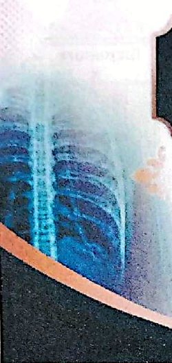
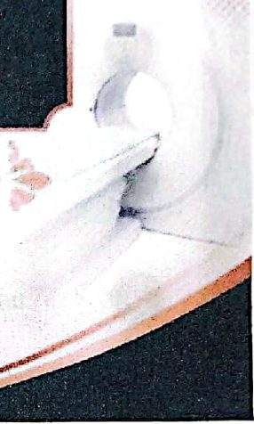
This is the traditional method that is often referred to as film-based radiography the need for processing chemicals, the use of a dark room, the need for human resources
هذه هي الطريقة التقليدية التي يُشار إليها غالباً باسم التصوير الشعاعي المعتمد على الفيلم، وفيها الحاجة إلى مواد التحميض الكيميائية، واستعمال الغرفة المظلمة، والحاجة إلى الموارد البشرية.
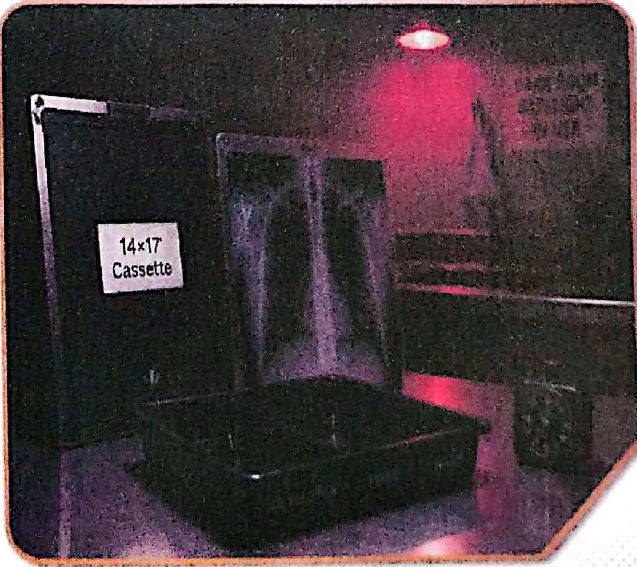
التقنية التناظريةAnalog Technology
التحميض الكيميائيChemical Processing
- 1. Developerالمُظهِّر
- 2. Fixerالمثبِّت
- 3. Washالغسل
- 4. Dryالتجفيف
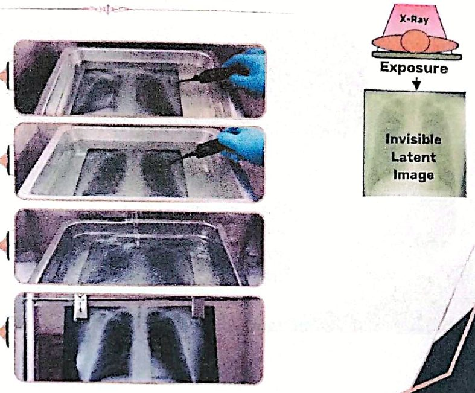
تقنية التصوير الرقمي (المحوسب)Digital (Computed) Imaging Technology
This technology eliminates the need for dark-room and chemical processing
هذه التقنية تُلغي الحاجة إلى الغرفة المظلمة وإلى التحميض الكيميائي.
- 1. Reusable phosphor plates are used as image receptorsتُستعمل ألواح فوسفور قابلة لإعادة الاستعمال بوصفها مستقبِلات للصورة.
- 2. Scanned by CR reader (digitizer with laser scanner)تُقرأ (تُمسح) بـ قارئ CR (محوِّل رقمي مزوَّد بماسح ليزري).
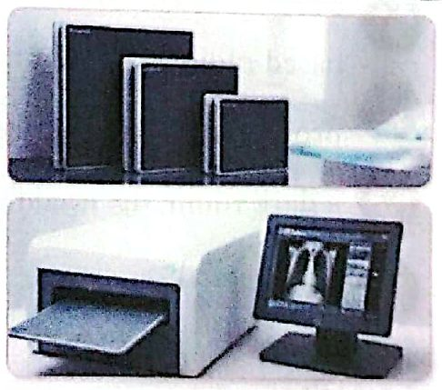
Laser scanner (CR-reader) convert the stored information into digital images., the image receptor then erased prior to the next use..
يحوّل الماسح الليزري (قارئ CR) المعلومات المخزّنة إلى صور رقمية، ثم يُمسَح مستقبِل الصورة قبل استعماله التالي.
تطور التصوير الشعاعيRadiography Development
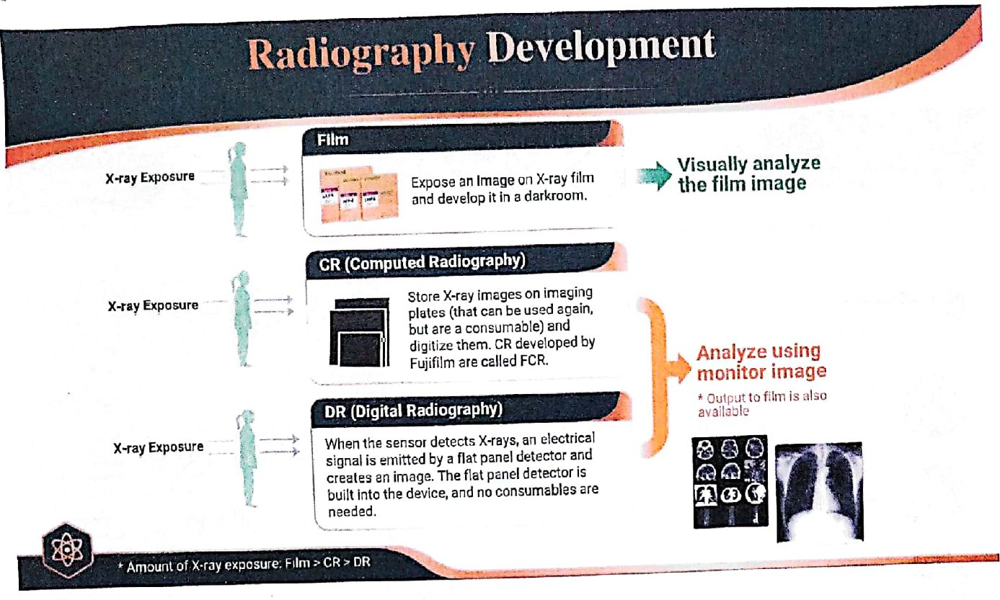
Analyze using monitor image * Output to film is also available
في CR وDR: تُفحص الصورة على شاشة العرض. (ويمكن إخراجها على فيلم أيضاً).
* Amount of X-ray exposure: Film > CR > DR
كمية التعرّض للأشعة السينية: الأكثر في الفيلم، ثم CR، والأقل في DR.
- 1. Traditional Film Radiographyالتصوير الشعاعي التقليدي بالفيلم
- 2. CR (Computed Radiography)التصوير الشعاعي المحوسب (CR)
- 3. DR (Digital Radiography)التصوير الشعاعي الرقمي المباشر (DR)
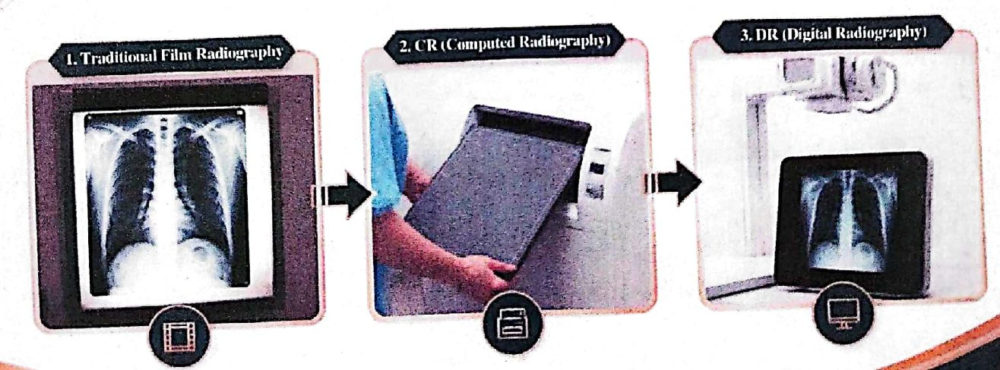
عوامل التعرّض: kVp وmAExposure Factors: kVp and mA
Several radiographic exposure factors are selected by the radiologic technologist for proper patient exposure.
يختار تقنيّ الأشعة عدداً من عوامل التعرّض الشعاعي لضمان التعرّض المناسب للمريض.
1- ذروة الجهد بالكيلوفولت1. kilovoltage Peak (kVp )
kilovoltage Peak (kVp ): is the primary control of beam quality and beam penetrability.
kVp (ذروة الجهد بالكيلوفولت) هو المتحكّم الأساسي في نوعية الحزمة وقدرتها على الاختراق.
- • kVp has more effect than any other factor because it affects beam quality.لـ kVp تأثير أكبر من أي عامل آخر، لأنه يؤثر في نوعية الحزمة.
- • Increasing kVp = more x-ray = more scatter radiation.زيادة kVp = أشعة سينية أكثر = إشعاع متشتّت أكثر.
- • High quality primary beam=higher energy=more penetrate.الحزمة الأولية عالية النوعية = طاقة أعلى = اختراق أكثر.
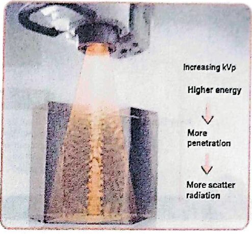
kilovoltage Peak (kVp ): is the primary control of beam quality and beam penetrability.
kVp هو المتحكّم الأساسي في نوعية الحزمة وقدرتها على الاختراق.
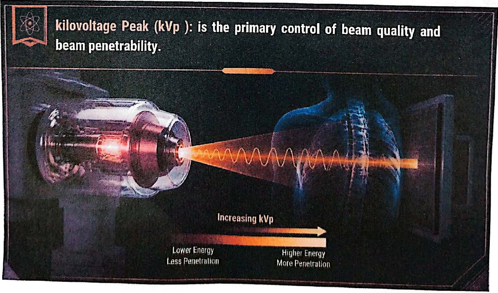
2- الملي أمبير2-Milli-Amperes(mA)
- 1. mA is determined the number of x-ray produced and radiation quantity.قيمة mA (شدة تيار الأنبوب) تحدد عدد الأشعة السينية المُنتَجة وكمية الإشعاع.
- 2. The more electrons cause to flow through the x-ray tube, The more x-ray will be producedكلما زاد عدد الإلكترونات التي تمرّ عبر أنبوب الأشعة السينية، زادت الأشعة السينية المُنتَجة.
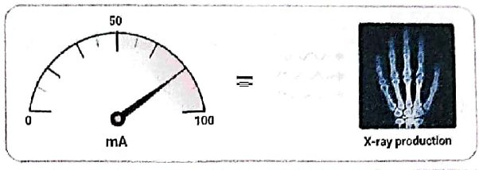
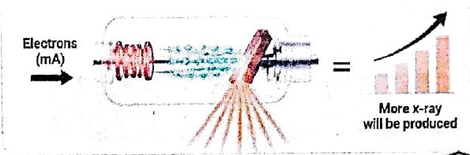
زمن التعرّض وmAs والمسافةExposure Time, mAs and Distance
3- زمن التعرّض3-Exposuretime(ms ):
- • Exposure time is a measure of how long the exposure will continue and measures in units of second, fractions of seconds or milliseconds.زمن التعرّض مقياس للمدة التي يستمر فيها التعرّض، ويُقاس بالثواني أو بأجزاء الثانية أو بالملي ثانية.
- • Short exposures reduce patient motion blur.التعرّضات القصيرة تقلّل الضبابية الناتجة عن حركة المريض.
- • When exposure time is reduced, mA must be increased proportionally to provide the required intensity.عند تقليل زمن التعرّض يجب زيادة mA بالنسبة نفسها للحصول على الشدة المطلوبة.
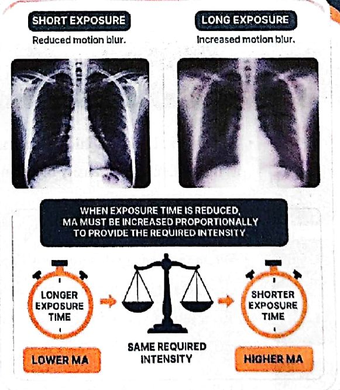
4- الملي أمبير-ثانية4-MilliAmpere-Seconds:
mA x time = mAs
mA x time = mAs (حاصل ضرب mA في الزمن)
It is determining the number of x-rays in the primary beam therefore it principally controls radiation quantity.
وهو يحدد عدد الأشعة السينية في الحزمة الأولية، ولذلك يتحكم بصورة رئيسة في كمية الإشعاع.
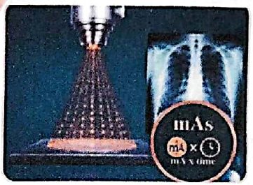
5- المسافة5-Distance:
The distance between the source of x-ray beam ( the tube target) and the image receptor distance (IR) is referred to as the source image distance ( SID).
المسافة بين مصدر حزمة الأشعة السينية (هدف الأنبوب) ومستقبِل الصورة (IR) تُسمّى المسافة بين المصدر ومستقبِل الصورة (SID).
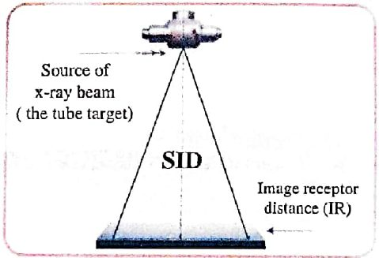
التباينContrast
When the density difference is large, the contrast is high and when the density difference is small, the contrast is low.
عندما يكون فرق الكثافة كبيراً يكون التباين عالياً، وعندما يكون فرق الكثافة صغيراً يكون التباين منخفضاً.
Contrast can be described as long-scale or short-scale contrast
يمكن وصف التباين بأنه تباين طويل المدى أو قصير المدى.
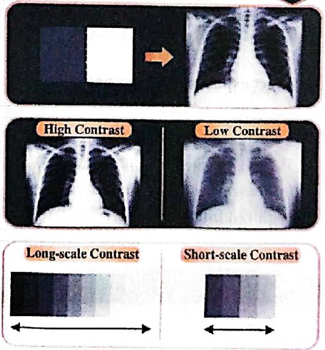
السطوع ونسبة الإشارة إلى الضجيجBrightness and Signal-to-Noise Ratio (SNR)
- • Digital imaging = brightnessفي التصوير الرقمي: السطوع
- • Film-based term = densityالمصطلح المقابل في الفيلم: الكثافة
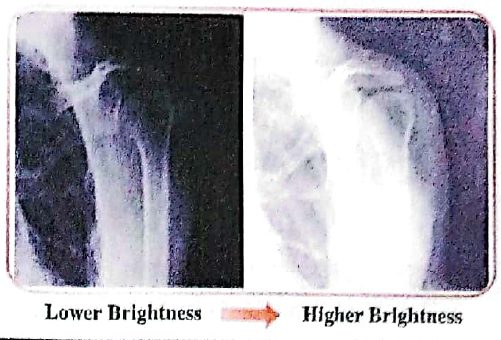
نسبة الإشارة إلى الضجيجSignal to-NoiseRatio(SNR)
The number of x-ray photons that strike the receptor (mAs) can be considered the "signal."
عدد فوتونات الأشعة السينية التي تصطدم بالمستقبِل (mAs) يمكن عدّه «الإشارة».
- • ↓ mAs → ↓ X-ray photons → ↓ Signal → ↓ SNR → ↑ Noise → Grainy/Mottled image↓ mAs ← ↓ فوتونات الأشعة ← ↓ الإشارة ← ↓ SNR ← ↑ الضجيج ← صورة محبّبة/مبقّعة
- • ↑ mAs → ↑ X-ray photons → ↑ Signal → ↑ SNR → ↓ Noise → Better image quality↑ mAs ← ↑ فوتونات الأشعة ← ↑ الإشارة ← ↑ SNR ← ↓ الضجيج ← جودة صورة أفضل
- • Appropriate mAs → Good SNR → Good imagemAs مناسب ← SNR جيدة ← صورة جيدة
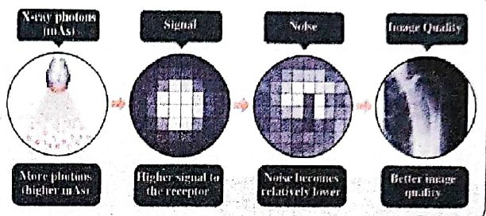
الدقة المكانيةSpatial Resolution
*line pairs per mm (lp mm).
وتُقاس بأزواج الخطوط لكل ملّيمتر (lp/mm).
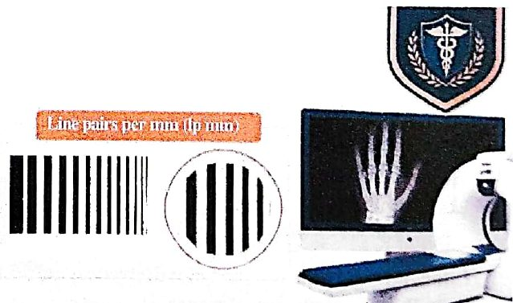
في التصوير الرقميIn digital imaging:
- • Large pixel → ↓ Spatial Resolution → ↓ Detail → Blurبكسل كبير ← ↓ الدقة المكانية ← ↓ التفاصيل ← ضبابية
- • Small pixel → ↑ Spatial Resolution → ↑ Detail →بكسل صغير ← ↑ الدقة المكانية ← ↑ التفاصيل ← ✓
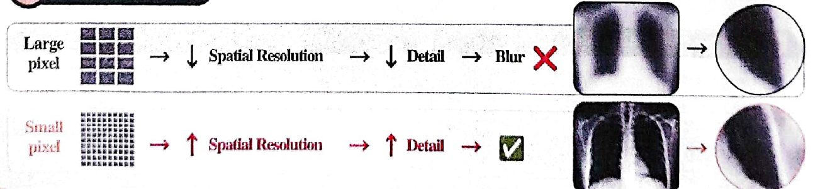
التشوّهDistortion
التشوّه (التكبير)Distortion (magnification)
Size Distortion → ↑ OID → ↑ Magnification → Object appears larger
تشوّه الحجم ← زيادة OID (المسافة بين الجسم ومستقبِل الصورة) ← زيادة التكبير ← يظهر الجسم أكبر.
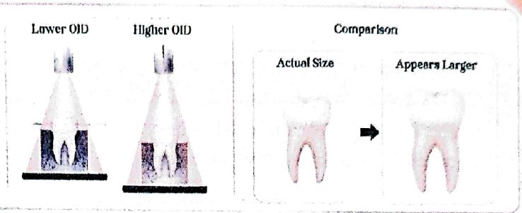
تشوّه الشكلShape distortion
Shape Distortion → Incorrect Alignment → Changed shape
تشوّه الشكل ← محاذاة غير صحيحة ← شكل متغيّر.
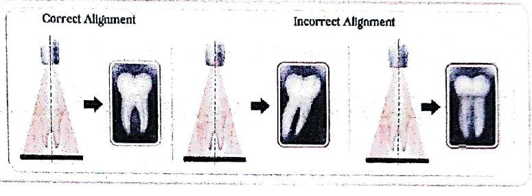
الضجيجNoise
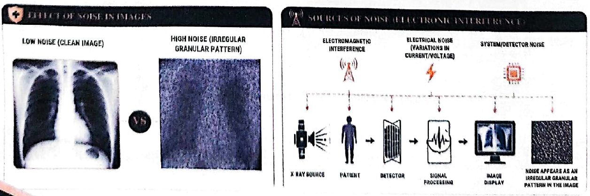
المحاضرة مسموعة
نص الأستاذ بالإنكليزي مثل الأصل · 4.9 دقيقة. اضغط أي جملة تسمعها، أو مصطلح منقّط تسمع لفظه ومعناه.
Analog (Conventional Imaging Technology)التصوير التناظري (التقليدي)
Analog (Conventional Imaging Technology)
This is the traditional method that is often referred to as film-based radiography the need for processing chemicals, the use of a dark room, the need for human resources
Analog Technology
Chemical Processing
Developer
Fixer
Wash
Dry
Digital (Computed) Imaging Technologyتقنية التصوير الرقمي (المحوسب)
Digital (Computed) Imaging Technology
This technology eliminates the need for dark-room and chemical processing
Reusable phosphor plates are used as image receptors
Scanned by CR reader (digitizer with laser scanner)
Laser scanner (CR-reader) convert the stored information into digital images., the image receptor then erased prior to the next use..
Radiography Developmentتطور التصوير الشعاعي
Radiography Development
Analyze using monitor image * Output to film is also available
* Amount of X-ray exposure: Film > CR > DR
Traditional Film Radiography
CR (Computed Radiography)
DR (Digital Radiography)
Exposure Factors: kVp and mAعوامل التعرّض: kVp وmA
Exposure Factors: kVp and mA
Several radiographic exposure factors are selected by the radiologic technologist for proper patient exposure.
1. kilovoltage Peak (kVp )
kilovoltage Peak (kVp ): is the primary control of beam quality and beam penetrability.
kVp has more effect than any other factor because it affects beam quality.
Increasing kVp = more x-ray = more scatter radiation.
High quality primary beam=higher energy=more penetrate.
kilovoltage Peak (kVp ): is the primary control of beam quality and beam penetrability.
2-Milli-Amperes(mA)
mA is determined the number of x-ray produced and radiation quantity.
The more electrons cause to flow through the x-ray tube, The more x-ray will be produced
Exposure Time, mAs and Distanceزمن التعرّض وmAs والمسافة
Exposure Time, mAs and Distance
3-Exposuretime(ms ):
Exposure time is a measure of how long the exposure will continue and measures in units of second, fractions of seconds or milliseconds.
Short exposures reduce patient motion blur.
When exposure time is reduced, mA must be increased proportionally to provide the required intensity.
4-MilliAmpere-Seconds:
mA x time = mAs
It is determining the number of x-rays in the primary beam therefore it principally controls radiation quantity.
5-Distance:
The distance between the source of x-ray beam ( the tube target) and the image receptor distance (IR) is referred to as the source image distance ( SID).
Contrastالتباين
Contrast
Definition : Radiographic contrast is defined as the difference in density between adjacent areas of a radiographic image.
When the density difference is large, the contrast is high and when the density difference is small, the contrast is low.
Contrast can be described as long-scale or short-scale contrast
Brightness and Signal-to-Noise Ratio (SNR)السطوع ونسبة الإشارة إلى الضجيج
Brightness and Signal-to-Noise Ratio (SNR)
The intensity of light that represents the individual pixels in the image on the monitor.
Digital imaging = brightness
Film-based term = density
Signal to-NoiseRatio(SNR)
The number of x-ray photons that strike the receptor (mAs) can be considered the "signal."
↓ mAs → ↓ X-ray photons → ↓ Signal → ↓ SNR → ↑ Noise → Grainy/Mottled image
↑ mAs → ↑ X-ray photons → ↑ Signal → ↑ SNR → ↓ Noise → Better image quality
Appropriate mAs → Good SNR → Good image
Spatial Resolutionالدقة المكانية
Spatial Resolution
The ability of an imaging system to differentiate between two near-by objects.
*line pairs per mm (lp mm).
In digital imaging:
Large pixel → ↓ Spatial Resolution → ↓ Detail → Blur
Small pixel → ↑ Spatial Resolution → ↑ Detail →
Distortionالتشوّه
Distortion
Distortion (magnification)
Size Distortion → ↑ OID → ↑ Magnification → Object appears larger
Shape distortion
Shape Distortion → Incorrect Alignment → Changed shape
Noiseالضجيج
Noise
Information that is not part of a desired signal and originates from a number of sources including electronic interference. It appears as an irregular granular pattern in all images
42 سؤال من نص المحاضرة، ويّا «ليش صح» بعد كل جواب.
ابدأ الاختباراضغط أي مصطلح منقّط تسمع لفظه ومعناه.
PDF ثنائي اللغة: نص الأستاذ + الترجمة + الخلاصة + الأسئلة · 2.2 MB
تحميل الملف